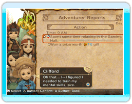

15 |
Dagelijkse verslagen |
 |
's Ochtends stelt Chime de verslagen van de vorige dag voor. Er zijn twee soorten rapporten: de rapporten van de avonturiers, die alle acties van de avonturiers van je koninkrijk uitvoerig beschrijven, en de financiële rapporten, die de uitgaven en inkomsten aan gil en elementite uitvoerig beschrijven.
● Adventurer Reports (Verslagen van de avonturiers) Dit zijn de verslagen van alle acties die alle avonturiers de vorige dag hebben uitgevoerd.  Je kunt ook de status en de voorwerpen van iedere avonturier vanuit dit scherm bekijken. Selecteer een lijn in het verslag en druk op ● Financial Report (Financiële verlag) De financiële transacties van de vorige dag staan in dit verslag gedetailleerd. Dit scherm toont de hoeveelheid uitgegeven gil, de inkomsten afkomstig van tienden, de elementite die in kerkers werd gehaald, en alles wat je nodig hebt om de uitgaven van de volgende dag te ramen.
|

 |
 |
 |